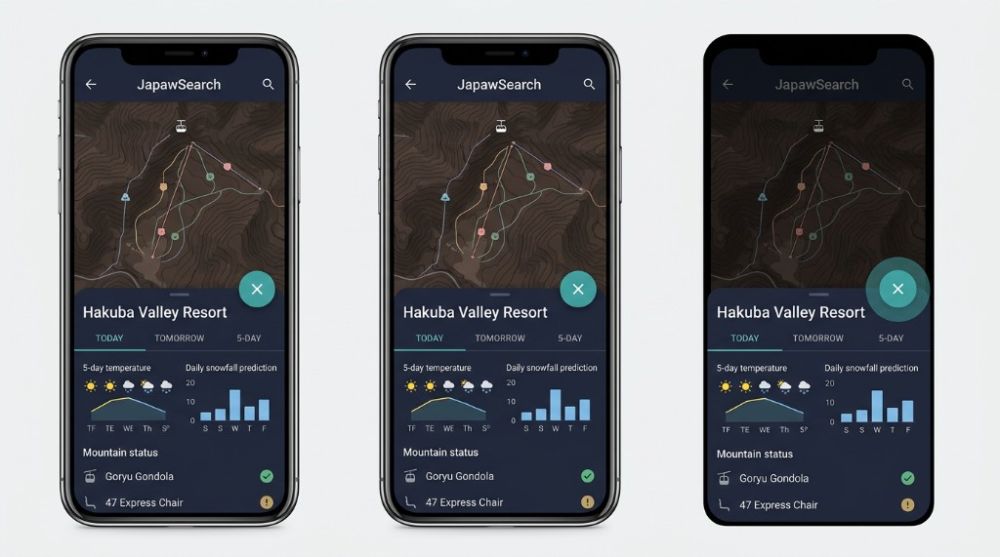

この画面が正解。黄色枠の注釈は、いまの実装をこの見た目に寄せるために近づける作業だけを書いています（比較用の右画面はありません）。

一覧（同じ内容）
docs/mobile-sheet-visual-compare.html ／ 画像 assets/ui-mock-mobile-map-bottom-sheet.png
docs/mobile-sheet-visual-compare.html
assets/ui-mock-mobile-map-bottom-sheet.png